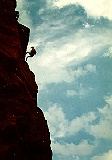

Eldorado Canyon is not inside Rocky Mountain National Park, but with a 60-minute drive to this state park, we can provide some of the best climbing in Colorado. Choose from beginner climbs to advanced routes on 400-600 foot walls.
All climbs are close to the parking lot, and we will tailor the Eldorado tour to your skill and experience.
Difficulty Level: Beginner to expert
Time: One day
Physical Stress: Mild to extreme